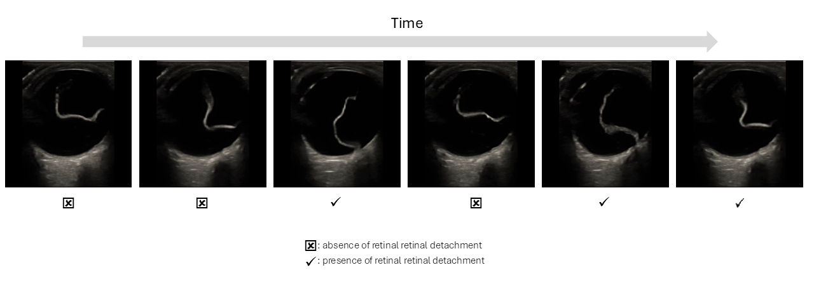
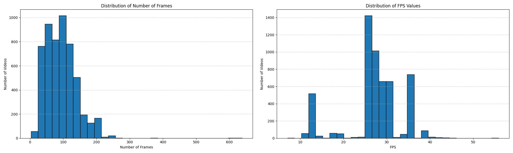
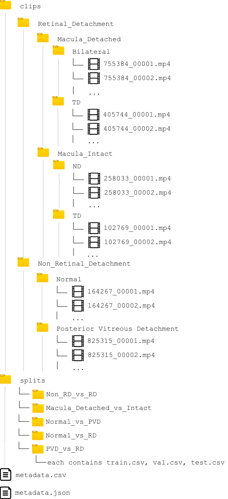
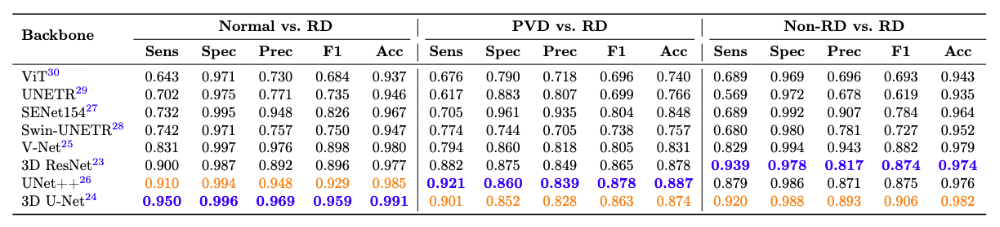
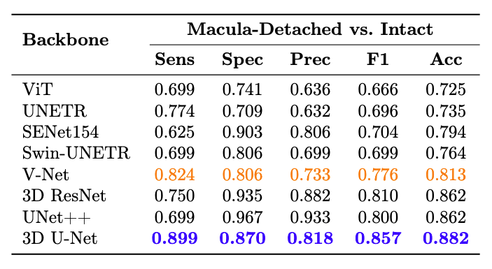
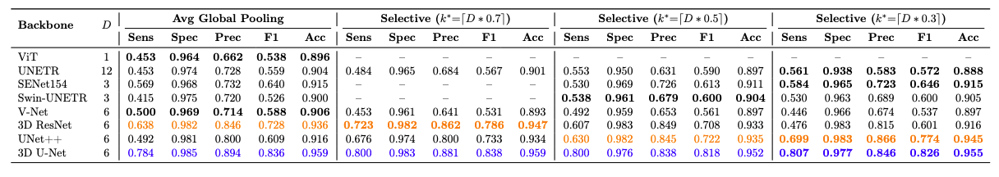

Retinal detachment (RD) is a vision-threatening condition that requires prompt intervention to preserve sight. A critical factor in treatment urgency and visual prognosis is macular involvement—whether the macula is intact or detached. Point-of-care ultrasound (POCUS) is a fast, non-invasive, and cost-effective imaging tool commonly used to detect RD in various clinical settings. However, its diagnostic utility is limited by the need for expert interpretation, especially in resource-limited environments. To address this gap, we introduce Eye Retinal DEtachment ultraSound (ERDES), the first open-access dataset of ocular ultrasound clips labeled for (i) presence of RD and (ii) macula-detached vs. macula-intact status. ERDES includes 5,381 labeled ultrasound video clips enabling machine learning development for RD detection and macular status classification. We also provide baseline benchmarks using 40 models across eight spatiotemporal architectures.
Despite significant advances in machine learning for medical images, video-based analysis in the biomedical domain remains under-explored due to the limited availability of well-annotated medical video datasets. Medical videos, such as ocular ultrasound scans, are an integral part of clinical practice, yet their potential for AI-driven diagnostics and classification remains largely untapped. Open-access datasets have been instrumental in advancing computer vision for images; extending this collaborative environment to videos promises to accelerate progress and create robust, clinically relevant models. To date, no publicly available dataset supports macular-based retinal detachment classification using ultrasound video. ERDES addresses this gap by offering an openly available, expertly annotated dataset of ocular ultrasound videos. We also provide comprehensive baseline benchmarks by training 40 models in eight spatiotemporal architectures, including 3D convolutional networks and transformer-based models, for five binary classification tasks, along with a two-stage diagnostic pipeline that mirrors clinical decision-making for retinal detachment triage.

Ocular Videos: The ERDES dataset comprises 5,381 ocular B-scan ultrasound video clips, totaling approximately 5 hours and 10 minutes of video data. Clip durations range from 0.12 to 25.52 seconds (median 3.1s). These videos were acquired during routine clinical care in the Emergency Department at the University of Arizona between June 2010 and March 2022, using high-frequency linear transducers (5-12 MHz) across multiple ultrasound devices (Mindray/Zonare, Philips, GE, Sonosite). To ensure patient privacy and data standardization, all videos were meticulously processed to remove any patient identifiers. Capturing both normal and pathological findings, the dataset covers a wide range of imaging scenarios, reflecting clinical variability.

Annotations: Labels were generated using an adjudication-based workflow. Three clinical experts independently reviewed each ocular ultrasound clip and classified it into diagnostic categories. A fourth expert reviewed all labeled clips to verify accuracy and consistency, serving as a quality control step. Labeling was performed at the clip level, meaning each video clip was assigned a single overall label rather than annotating individual frames. This approach reflects how ocular ultrasound is interpreted clinically.
The ocular ultrasound video clips are categorized into two primary categories: Non-Retinal Detachment (Non-RD) and Retinal Detachment (RD).
The total number of clips per diagnostic category and subclass is reported in the table below:
| Class / Subclass | Number of Clips |
|---|---|
| Non-Retinal Detachment (Non-RD) | 4,879 |
| Normal | 4,233 |
| Posterior Vitreous Detachment (PVD) | 646 |
| Retinal Detachment (RD) | 502 |
| Macula Intact | 199 |
| Nasal Detachment (ND) | 88 |
| Temporal Detachment (TD) | 111 |
| Macula Detached | 303 |
| Temporal Detachment (TD) | 151 |
| Bilateral Detachment | 152 |
| Total | 5,381 |
This structured classification helps in systematically analyzing and interpreting the retinal pathologies present in the ultrasound data. You can see the structure of dataset folders in the below figure which reflect the labeling protocol.

Metadata: The dataset includes a structured metadata file (metadata.csv) with the following fields:
| Field | Description |
|---|---|
clip_id |
Unique identifier for each clip |
file_path |
Relative path to the video file |
diagnostic_class |
Primary diagnosis: rd or non_rd |
subtype |
Specific condition: normal, pvd, macula_intact, or macula_detached |
anatomical_subclass |
Location of detachment for RD cases: TD, ND, or Bilateral |
fps |
Frames per second |
frame_count |
Total number of frames in the clip |
width |
Frame width in pixels |
height |
Frame height in pixels |
duration_seconds |
Clip duration in seconds |
Data Preprocessing: We meticulously removed all protected health information and extraneous annotations present on the lateral sides of the ocular ultrasound clips. To achieve this, we employed a YOLOv8 object detection model trained specifically to identify and localize the globe of the eye within each video frame. The model was trained on 115 manually annotated example frames and validated on 51 frames, achieving a precision of 0.998 and recall of 1.000. The bounding boxes encompassed only the globe region, excluding peripheral areas that do not contribute to the diagnosis of retinal detachment. By leveraging YOLOv8's fast and accurate detection capabilities, we ensured that the region of interest (ROI) — the globe — was consistently identified throughout the entire clip. Subsequently, each frame in the video was cropped according to the detected bounding box, resulting in a refined dataset comprising only the relevant anatomical features for analysis. All video clips in the dataset are in mp4 format, optimized for further diagnostic tasks.
You can download the dataset using our HuggingFace🤗 Dataset Card or Zenodo:
The ERDES dataset is released under the CC-BY 4.0 license.
Our code is made publicly available under PCVLab's GitHub repository here. Pre-trained model checkpoints are available on Zenodo. Please consider starring the repo.
We provide baseline performance benchmarks using various spatiotemporal architectures for binary classification tasks on the ERDES dataset.
Table 1: Performance of models on three retinal detachment (RD) classification tasks: Normal vs. RD, PVD vs. RD, and Non-RD vs. RD. Metrics include sensitivity (Sens), specificity (Spec), precision (Prec), F1-score (F1), and accuracy (Acc). Models are sorted in ascending order based on sensitivity for the Normal vs. RD task. The best-performing model based on sensitivity for each task is shown in bold blue, and the second-best is highlighted in orange.

Table 2: Performance of models on macular status classification (macula-detached vs. -intact). Metrics include sensitivity (Sens), specificity (Spec), precision (Prec), F1-score (F1), and accuracy (Acc). The best-performing model based on sensitivity is shown in bold blue, and the second-best is highlighted in orange. Models follow the same ordering as in Table 1 to facilitate cross-task comparison.

Table 3: Comparison of temporal pooling strategies for Normal vs. PVD classification. All input clips consist of 96 frames, which are grouped into D temporal segments prior to classification. Selective pooling selects the top k* = [D * r] segments, where r is the selection ratio. For each backbone, the best-performing pooling strategy (by sensitivity) is shown in bold. Within each pooling strategy, the best-performing backbone is highlighted in blue and the second-best in orange, both determined by sensitivity. Dashes (--) indicate configurations where [D * r] = D, meaning all segments are retained and no selection occurs.

ERDES: A Benchmark Video Dataset for Retinal Detachment and Macular Status Classification in Ocular Ultrasound
Corresponding Author: Yasemin Ozkut. Nature Scientific Data (Under Review) (2025)
Note: If you intend to use ERDES dataset in your research please cite our work using this bibliography
@article{ozkuterdes,
title={ERDES: A Benchmark Video Dataset for Retinal Detachment and Macular Status Classification in Ocular Ultrasound},
author={Ozkut, Yasemin, Navard, Pouyan, and Adhikari, Srikar and Situ-LaCasse, Elaine and Acuña, Josie and Yarnish, Adrienne A and Yilmaz, Alper},
journal={arXiv preprint arXiv:2508.04735},
year={2025}
}
For inquiries, contact us at ozkut [dot] 1 [at] osu [dot] edu.
Design and source code of this website was taken from here.